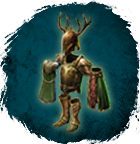
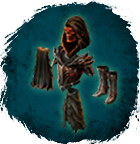
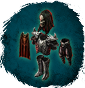
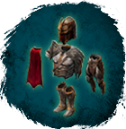
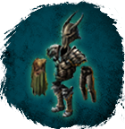
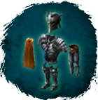
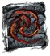

Открыть в интерактивной вики →
| Уровень | 110 |
|---|---|
| Сила (PvE) | 5838 |
| Аспект арены | Gherudu |
| Здоровье | 5200 |
| Мана | 5000 |
| Выносливость | 2000 |
| Респаун | 120 минут - 140 минут |
Локация
- Разрушенная башня
- Камера
- Пещера
- Под мостом
- Заброшенная Башня
- Пещера под водопадом
Команда


Дроп
 (40-60)
(40-60) 

Стихийная Броня (Друид 100)
Поцелуй Миллиона Звезд (Огненный Маг 100)
Пелена Смерти (Вуду 100)
Душа Мира (Шид 100)
Доспехи Бессмертия (Варвар 100)
Доспехи Ворлингов (Рыцарь 100) Око Богов (Лучник 100)
Око Богов (Лучник 100) 
Камни ворлингов


| Сеты | Синергетики | Эпики | |||
| Доспехи Бессмертия Стихийная Броня Око Богов Поцелуй Миллиона Звезд Доспехи Ворлингов Душа Мира Пелена Смерти | 40-60 ур. |  Эпики Эпики | |||
Прочее:  Нов Нов Воэ Воэ | |||||
Умения
- Удар
- Групповое Лечение — естественный иммунитет лечение рассеивание корни рой ос
Иммунитеты / особые умения
Устойчивость перед лицом смерти
Дропает
Лесная Корона, Преисподняя, Смерть, Айна, Корона Вечных Правителей, Шлем Ворлингов, Корона Ястреба, Вулкан, Жар, Мементо, Анахата, Древняя Броня, Броня Ворлингов, Броня Стрелка, Вихрь, Солнечный Ветер, Агония, Вайя, Плащ Вечности, Плащ Ворлингов, Камуфляж, Меандры, Искры, Шепоты, Манпуры, Поножи Вечности, Штаны Ворлингов, Седельные сумки, Грозы, Инферно, Лихорадящие, Ваханы, Дыхание Будущего, Сапоги Ворлингов, Кирсили